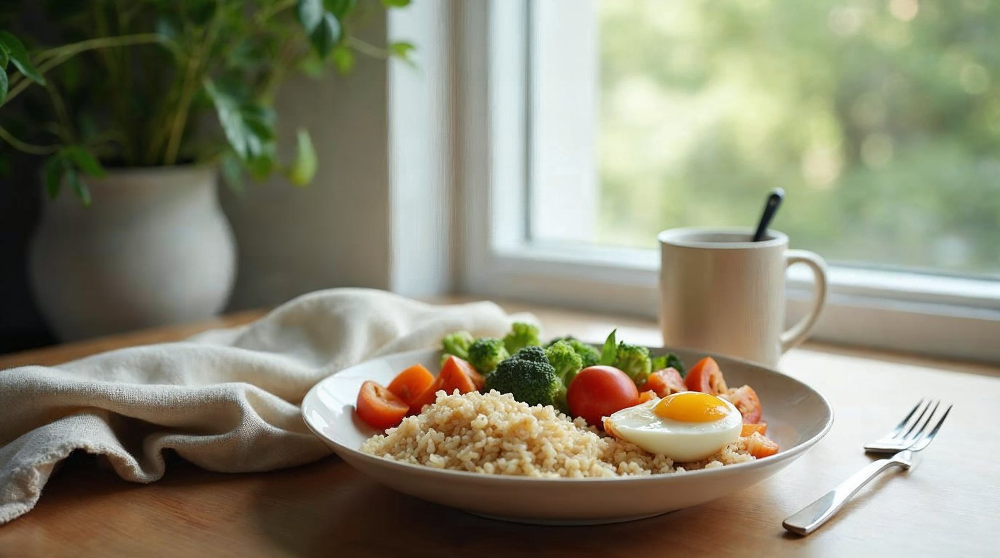
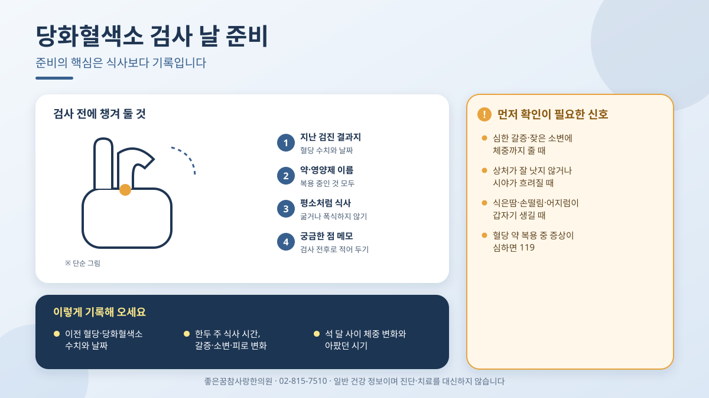

이종호 한의사 감수좋은꿈참사랑한의원 대표원장 (한의사 면허번호 19769)발행 2026-11-25 · 수정 2026-11-25
이 글의 차례
당화혈색소 검사를 앞두고 꼭 굶어야 하는지 묻는 분이 많습니다. 이 수치는 하루의 혈당보다 최근 몇 달의 흐름을 반영하기 때문에 준비의 핵심은 식사보다 기록입니다. 좋은꿈참사랑한의원에서는 진찰 후 필요하다고 판단될 때 검사하며, 결과는 생활 상담의 참고로 씁니다.
예를 들어 검사 전날 저녁을 굶었다고 해서 당화혈색소가 낮아지지는 않습니다. 이 수치는 지난 몇 달 동안의 식사와 활동, 잠이 쌓여 나타나는 값에 가깝기 때문입니다. 그래서 검사 당일의 준비보다, 지난 검사 이후 생활이 어떻게 달라졌는지를 함께 이야기하는 것이 결과를 이해하는 데 더 도움이 됩니다.
왜 기록이 더 중요할까요
- 당화혈색소는 하루가 아니라 몇 달의 흐름을 보여 주는 수치입니다.
- 이전 검진 수치와 나란히 봐야 방향이 보입니다.
- 복용 중인 약이 있으면 해석할 때 함께 알아야 합니다.
- 빈혈 등 다른 상태가 수치에 영향을 줄 수 있다고 알려져 있습니다.
- 최근 몸이 많이 아팠거나 큰 스트레스가 있었던 시기에는 혈당 흐름이 평소와 다를 수 있습니다.
먼저 이렇게 여쭙니다
- 최근 건강검진에서 혈당이나 당화혈색소를 들은 적이 있나요?
- 혈당이나 혈압 약을 드시고 있나요?
- 요즘 갈증, 잦은 소변, 피로가 있나요?
- 식사 시간과 간식 습관은 어떤가요?
일상에서 먼저 해 볼 수 있는 것
- 지난 건강검진 결과지를 찾아 두기
- 복용 중인 약과 영양제 이름을 적어 두기
- 평소와 다르게 굶거나 폭식하지 않기
- 검사 전후로 궁금한 점을 메모하기
- 검사 전 몇 주 동안 아팠던 날이나 큰 일정이 있었는지 떠올려 보기
한의원에서 함께 살필 수 있는 경우
- 검진에서 혈당 경계 소견을 들은 경우 식사·잠·활동을 함께 살핍니다.
- 체중과 체성분 변화가 함께 궁금한 경우 인바디 결과와 나란히 봅니다.
- 피로와 식욕 변화가 함께 있는 경우 생활 리듬을 이어서 여쭙니다.
좋은꿈참사랑한의원에서는 먼저 검진 기록과 생활 이야기를 충분히 듣고, 필요하다고 판단될 때 당화혈색소 검사기로 확인합니다. 결과는 생활 상담의 참고 자료이며, 당뇨 진단과 약 조절은 내과에서 확인하도록 안내해 드립니다.
헷갈리기 쉬운 점
당화혈색소가 괜찮게 나왔다고 해서 식후에 혈당이 크게 오르내리는 일이 없다는 뜻은 아닙니다. 평균을 보는 수치이기 때문입니다. 식후 졸림이나 심한 허기가 잦다면 그 내용도 함께 말씀해 주시고, 자세한 평가는 내과에서 받으시면 됩니다.

이렇게 기록해 오시면 상담이 쉬워집니다
- 이전 검진의 혈당·당화혈색소 수치와 날짜
- 복용 중인 약과 영양제
- 최근 한두 주의 식사 시간 메모
- 갈증·소변·피로 같은 변화
- 최근 석 달 사이 체중 변화와 아팠던 시기
이런 증상은 먼저 확인이 필요합니다
- 심한 갈증과 잦은 소변, 이유 없는 체중 감소가 함께 있는 경우
- 상처가 잘 낫지 않거나 시야가 흐려진 경우
- 식은땀·손떨림·어지럼이 갑자기 생긴 경우
복용 중인 약은 처방한 의사와 상의 없이 줄이거나 끊지 않습니다. 혈당 약을 드시는 중 식은땀과 어지럼이 심하면 가까운 응급실로 가세요.

여쭙는 것
- 최근 건강검진에서 혈당이나 당화혈색소를 들은 적이 있나요?
- 혈당이나 혈압 약을 드시고 있나요?
- 요즘 갈증, 잦은 소변, 피로가 있나요?
생활에서 해 볼 것
- 지난 건강검진 결과지를 찾아 두기
- 복용 중인 약과 영양제 이름을 적어 두기
- 평소와 다르게 굶거나 폭식하지 않기
한의원에서 함께 살필 것
- 검진에서 혈당 경계 소견을 들은 경우 식사·잠·활동을 함께 살핍니다.
- 체중과 체성분 변화가 함께 궁금한 경우 인바디 결과와 나란히 봅니다.
- 피로와 식욕 변화가 함께 있는 경우 생활 리듬을 이어서 여쭙니다.
먼저 확인이 필요한 신호
- 심한 갈증과 잦은 소변, 이유 없는 체중 감소가 함께 있는 경우
- 상처가 잘 낫지 않거나 시야가 흐려진 경우
- 식은땀·손떨림·어지럼이 갑자기 생긴 경우
한눈에 보는 표
| 구분 | 핵심 |
|---|---|
| 여쭙는 것 | 최근 건강검진에서 혈당이나 당화혈색소를 들은 적이 있나요? 혈당이나 혈압 약을 드시고 있나요? |
| 생활에서 해 볼 것 | 지난 건강검진 결과지를 찾아 두기 복용 중인 약과 영양제 이름을 적어 두기 |
| 한의원에서 함께 살필 것 | 검진에서 혈당 경계 소견을 들은 경우 식사·잠·활동을 함께 살핍니다. 체중과 체성분 변화가 함께 궁금한 경우 인바디 결과와 나란히 봅니다. |
| 먼저 확인이 필요한 신호 | 심한 갈증과 잦은 소변, 이유 없는 체중 감소가 함께 있는 경우 상처가 잘 낫지 않거나 시야가 흐려진 경우 |
자주 묻는 질문
굶고 가야 하나요?
당화혈색소만 볼 때는 대체로 굶지 않아도 되지만, 다른 검사가 함께 필요한지는 방문 전 전화로 확인해 주세요.
한의원 결과로 당뇨 진단을 받나요?
아닙니다. 진단과 약 조절은 내과에서 확인합니다.
결과지를 가져가야 하나요?
이전 검진 결과지가 있으면 흐름을 이어서 보기 쉽습니다.
얼마 만에 다시 검사하나요?
수치와 상태에 따라 다르며, 내과에서 안내받은 간격이 있다면 그 간격을 따르시면 됩니다.
좋은꿈참사랑한의원은 재진 때 지난번 이야기부터 이어서 여쭙니다. 진료시간과 예약은 오시는 길에서 확인하세요.
어디서 상담받을 수 있나요?
좋은꿈참사랑한의원은 서울 동작구 만양로2길 2 신성빌딩 3층·5층(서울 동작구 상도동, 7호선 상도역 3번 출구 근처)에 있습니다. 한의사 3명(이종호 대표원장, 조영기 수석진료원장, 정원영 진료원장)이 진료합니다. 진료시간은 평일 09:30~20:00(점심 13:00~14:00), 토·일·공휴일 09:30~15:00이며, 방문 전 전화로 확인을 권합니다. 예약은 네이버 예약, 카카오톡 상담, 전화 02-815-7510로 받습니다.
이 글은 일반적인 건강 정보이며 개인의 진단이나 치료를 대신하지 않습니다. 증상이 있거나 복용 중인 약이 있다면 진료를 통해 확인하세요. 치료 효과는 개인마다 다를 수 있습니다.
작성 기준: 일반적으로 알려져 있는 건강 정보를 참고해 정리했습니다(대표원장 감수). 증상 기록은 1~2주 동안 하루 1회, 비슷한 시간에 적어 오시면 지난 상태와 비교하기 쉽습니다.